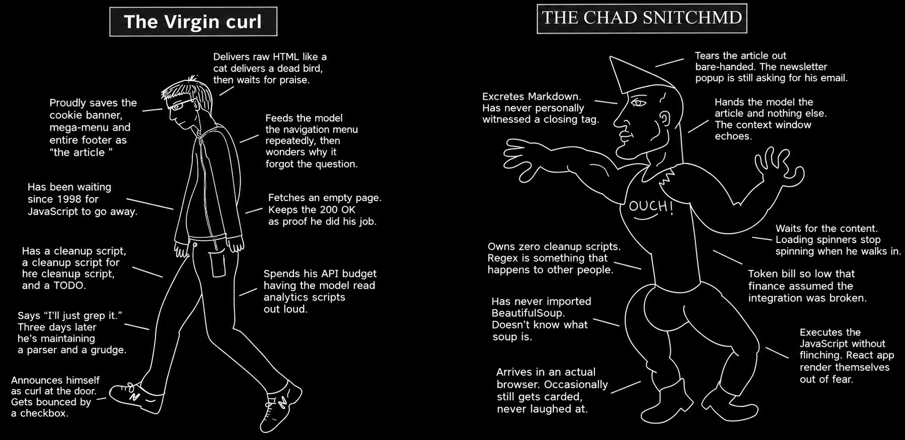

Fetch clean Markdown for humans and AI agents, bypassing Cloudflare and JS protection. Single 75 MB binary for macOS and Linux runs locally, without API keys.
Blocked as a bot.
Returns a challenge page instead of the article.
<!DOCTYPE html><html lang="en-US"> <head> <title>Just a moment...</title> <noscript> Enable JavaScript and cookies to continue </noscript> <script>window._cf_chl_opt = { ... }</script> </head>
Passes bot protection.
Strips menus and footers, prints Markdown.
In this C++ code, sorting the data (*before* the timed region) makes the primary loop ~6x faster: ``` #include <algorithm> #include <ctime> #include <iostream> int main() {

Clears Cloudflare, DataDome, AWS WAF, and JS challenges on Stack Overflow, Reddit, NYTimes, WSJ, FT, and IMDb.
Saved to disk after the first fetch, so repeat calls for the same URL return immediately.
Clean Markdown and JSON output with a ready skill for Claude Code, Cursor, and Codex.
Prints the article body as Markdown to stdout — ready to pipe into an LLM.
July 2023 If you collected lists of techniques for doing great work in a lot of different fields, what would the intersection look like? I decided to find out by making it. The first step is to decide what to work on...
Returns JSON with title, final URL, quality score, and Markdown for scripts and pipelines.
{ "url": "https://paulgraham.com/greatwork.html", "title": "How to Do Great Work", "quality": 0.7, "chars": 133088, "markdown": "July 2023\n\nIf you collected lists..." }
Extracts only the matching CSS selector — here, the Wikipedia infobox as a Markdown table.
| Markdown | |
| ------------------- | ---------------- |
| Filename extensions | .md, .markdown |
| Internet media type | text/markdown |
| Developed by | John Gruber |
| Initial release | March 9, 2004 |
| Type of format | Open file format |
Runs locally on macOS and Linux.